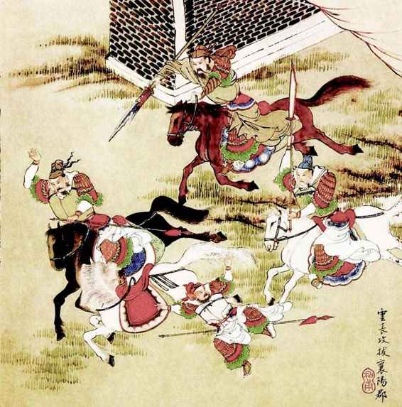
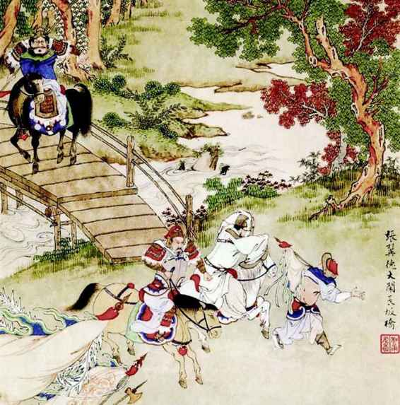
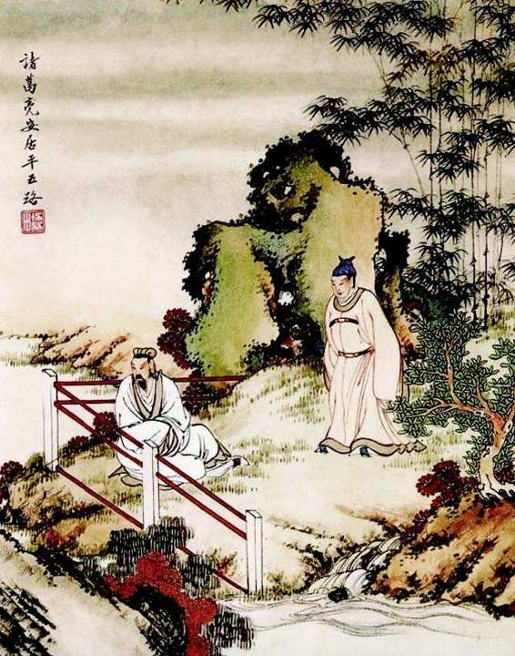
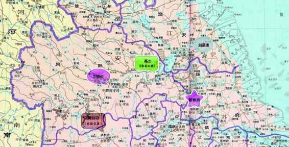

不过，本文所欲谈却不在这个方面。那些有形、直观的溷乱，有目即见，所贪无非鬻一爵“七百金”、“千五百金”、“三千金”[40]之类。小人系统出于“极度自私”而干的另一些坏事，隐蔽、间接，也不牵涉具体的钱帛数目，但严重后果却可至无法衡量的地步。
我所指的是：小人系统为使攫夺过程不受干扰、攫夺成果最大化，使出浑身解数，破坏国家权力形态，扰乱其组织，使有序变无序——古人谓之朝纲荡然、法纪废弛。这才是历来小人政治重创社会、历史之最甚者。与此相比，有形、具体的招权纳赂，从物质和实有层面挖国家墙脚，根本不在一个量级。它拆毁的是国家形式、机制和原理。古代各种制度本来阙漏就多、粗疏不密，而再经这种淆紊，真可谓国之不国。历来，仅有贪腐都还不足以亡国，一旦到了纲纪荡然的时候，才彻底无可救药。对以马士英为首辅之后的南京，当时的人以及后世观察家，一般都最痛心疾首于贪腐一端，现在我们要为大家指出，它真正可怕的征候，在于国事已无法做任何有组织的管理，或者说，一切需要有组织地管理的事务都不能展开。从甲申年五月到乙酉年五月，终弘光一朝，如历梦幻，一事无成，根由就是国家组织功能丧失。当时虽然风雨飘摇，东南一隅局面尚稳，但社会未乱，中枢却已坏死，国家遂为有身无头的行尸走肉。

彩绘《三国演义》•云长攻
拔襄阳郡 金协中绘论忠勇二字，黄得功像极关羽。但两人相类之处更在于缺点，都不能顾大局，只不过关羽已被理想化，手里握着一本《春秋》。

彩绘《三国演义》•张翼德大闹长坂桥 金协中绘
高杰有张飞之猛，连心地的浑朴也有几分相像。张飞酒后梦中被怀怨的部将割下头颅，高杰也差不多是这样遭了暗算。但张飞好歹粗中有细，高杰连这一点也做不到。

彩绘《三国演义》•诸葛亮安居平五路 金协中绘
史可法有孔明之德，而乏其才。他做到了鞠躬尽瘁，而不能更多。这当中，整体现实的制约超过了他的个人局限性。考虑到现实，他将高杰成功感化，难度不亚于收伏孟获。

江北四镇示意图
四镇体系是：以督师一员，驻于扬州，居中调度。下设四镇，以刘泽清、高杰、刘良佐和黄得功分驻淮安、泗州、临淮、庐州。近期防务，远期“恢复”。未来，淮安镇沿山东方向恢复，泗州镇沿开、归方向恢复，临淮镇沿陈、杞方向恢复，庐州镇沿光、固方向恢复。
像设四镇这样的全局性重大军事部署，它的实施与执行，必以正常的国家组织功能为前提。正如南京士民所强调的：“使可法从中调度，则兵粮有着着应手之模；万一可法自行，则虽身任督师，而中枢已更成局，实战守有事事纷扰之渐”。因此，史可法去位之更深层的意味，是从此南京将不再会发挥有效的组织功用。这不仅很快显现出来，而且迅速发展到惊人的地步。甲申年六月，出外督师一个多月的史可法以一道《款虏疏》，敦促朝廷紧急研究对清政策。其中一段，把南京中枢的散架面貌揭示得淋漓尽致：“敌兵闻已南来，凶寇又将东突，未见庙堂议定遣何官、用何敕、办何银、派何从人，议论徒多，光阴已过。”[41]几个“何”字，犹如一连串问号，悬挂在南京“庙堂”之上。这是真实写照，朝中衮衮诸公逐日上朝、退朝，但无人知道他们究竟忙些什么。
岂但不起组织作用，反过来还起破坏作用。孤悬在外的史可法，最后徒具“督师”之名，催饷不应，调兵不灵。马、阮视手中权为禁脔，一味猜忌，一味刁难，不仅钱粮蕲而不发，更以“掺沙子”之术，安插亲信心腹加以沮抑，必欲史可法徒劳无功而后快。史可法一度灰心绝念，引咎求退。他于乙酉年一月上《自劾师久无功疏》：
臣本无才，谬膺讨贼，亦谓猛拌一死，力殄逆氛，庶仰酬先帝之恩，光赞中兴之治。岂知人情未协，时势日艰。自旧岁五月出师，左拮右据，前疐后跋，初则调停诸镇，继则踯躅河上。[42]
此疏之上，事出有因。当时有个卫胤文，“欲媚士英”，提出一个“督师多余论”，说“国家兵事问镇臣，粮饷问部臣，督师赘疣也”。史可法因而乞罢，旨意当然不准，“切责胤文，而谕可法尽职”，“然士英心窃喜之”。不久，马士英“擢胤文为兵部右侍郎，总督兴平（高杰）营将士兵马”。[43]
单看事实，“督师赘疣也”讲得也并不错，史可法自己都怅叹“踯躅河上”，大半年光阴，碌碌无为、只是虚抛。然而后人从中所见并非史可法无能，恰恰是小人系统在内耗、自耗上释放着怎样巨大的能量。有它从中作梗，就算周公复生、孔明再世，也要落个师老无功的下场。在一群硕鼠啃啮拖拽下，朝廷完全散架，不能组织起来做任何事，像设四镇那样的从指挥到后勤要求百密不疏、环环相扣的军事计划，尤其不可能贯彻实施——此即“既无组织”之谓。